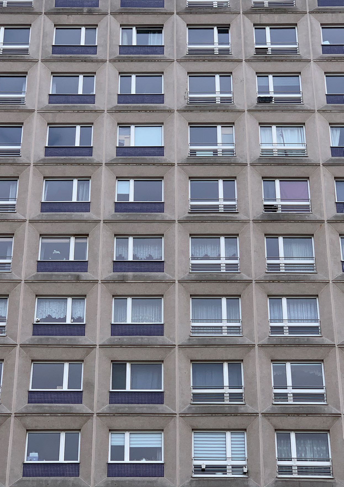
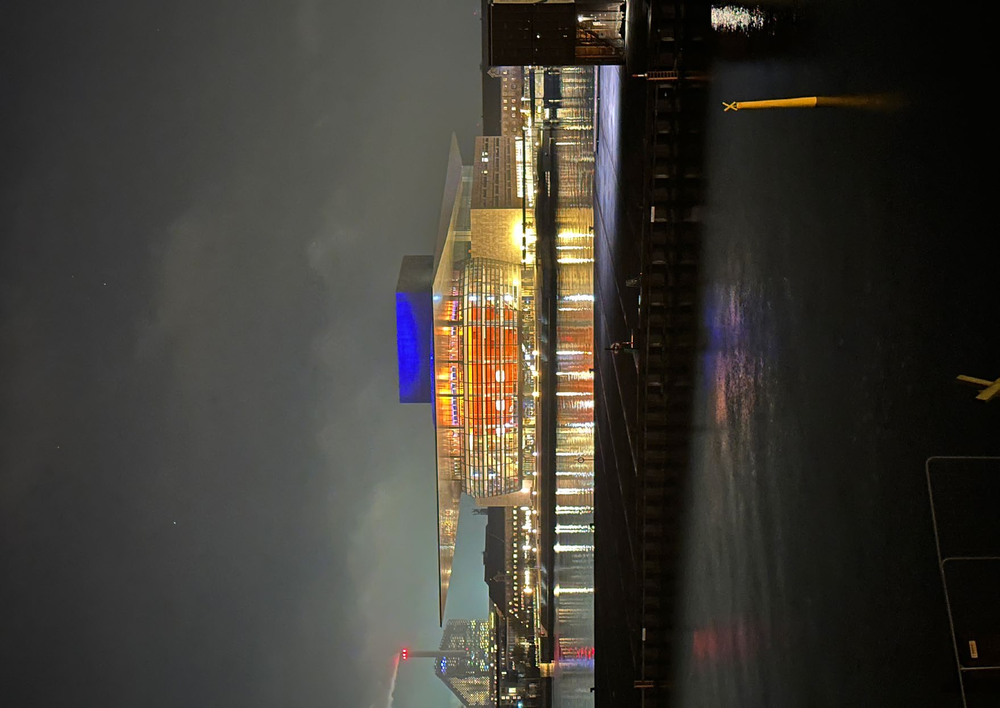

Fachbeiträge und Standpunkte
Kein Interview, kein Kommentar: ein durchdachter Beitrag aus einer Disziplin. Fachleute vertiefen die Fragen, die unsere Gespräche aufwerfen, und schauen aus ihrem eigenen Blickwinkel auf Wirtschaft, Recht, Gesundheit und Gesellschaft. Frei lesbar.
Die Blickwinkel der Ausgabe 2025-02 (Schwerpunkt Energie) lösen wir gerade Beitrag für Beitrag auf, die Übersicht wächst. Darunter alle fünf Blickwinkel der Ausgabe 2025-01, 1:1 aus dem Heft.
Dunkelflaute
Wie sich ein Blackout im Geistigen abzeichnet: eine pointierte Analyse der Energiepolitik zwischen politischer Naivität und historischem Vergessen.
Wirtschaftliche Anforderungen
Warum Wirtschaftlichkeit für die Daseinsvorsorge mit Energie zentral ist, und ein Sofortprogramm gegen die Abwärtsspirale der deutschen Wirtschaft.
Was ist Konservatismus?
Eine nüchterne Begriffsklärung: was Konservatismus eigentlich meint, jenseits der Tagespolitik.

Woran es krankt: Eine Hausärztin gibt Einblicke
Eine Hausärztin über den Alltag in der medizinischen Grundversorgung und das, woran das System krankt.
Datenschutz oder Chaos?
Die elektronische Patientenakte und die Sicherheit der Patientendaten: Wie sicher ist die ePA wirklich?
Digitalisierung: Warum Menschen auf der Strecke bleiben
Wenn die Technik schneller läuft, als die Menschen mitkommen: über die Schattenseiten der Digitalisierung.

Innovation: KI-basierte Recherche
Wie KI-gestützte Recherche die Arbeit in Steuer und Recht verändert: schneller, verlässlicher, nachprüfbar.
Fünf Blickwinkel aus Ausgabe 2025-01. Mit jeder Ausgabe kommen neue dazu.